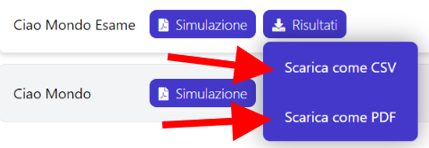

Esami degli studenti
Dopo che un esame si è concluso, è possibile scaricare gli esami degli studenti che hanno partecipato all'esame. Gli esami degli studenti sono scaricabili in due formati diversi:
-
Come un unico file csv.
-
Come un file zip che contiene l'esame in formato pdf di ogni studente che ha partecipato all'esame.
Come scaricare gli esami degli studenti
Se non hai fatto il login
- Effettua il login con le tue credenziali di ateneo.
- Clicca il pulsante Visualizza e modifica esami e comparirà la lista degli esami che hai creato e di cui sei referente.

- Sposta il cursore sul pulsante Risultati dell'esame di cui intendi scaricare gli esami degli studenti, quindi clicca su Scarica come CSV oppure Scarica come PDF.

Se sei nella pagina Lista esami
- Sposta il cursore sul pulsante Risultati dell'esame di cui intendi scaricare gli esami degli studenti, quindi clicca su Scarica come CSV oppure Scarica come PDF.